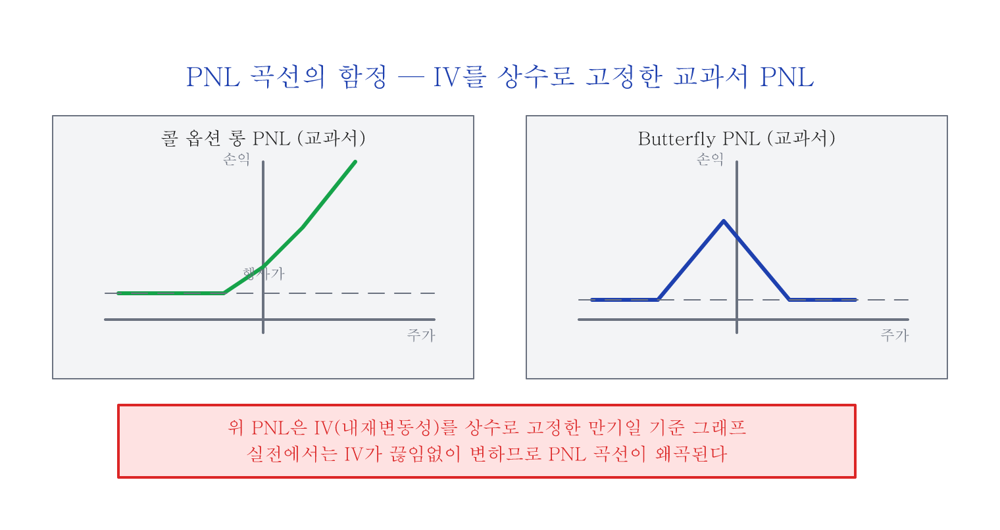
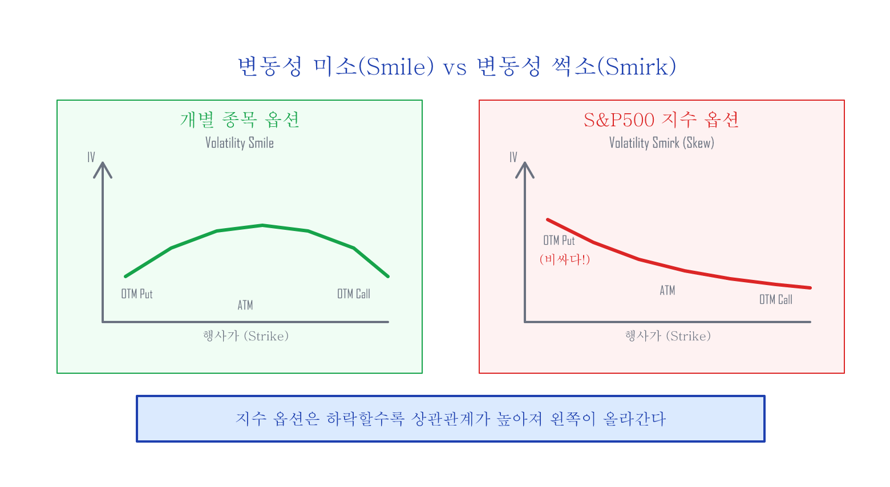
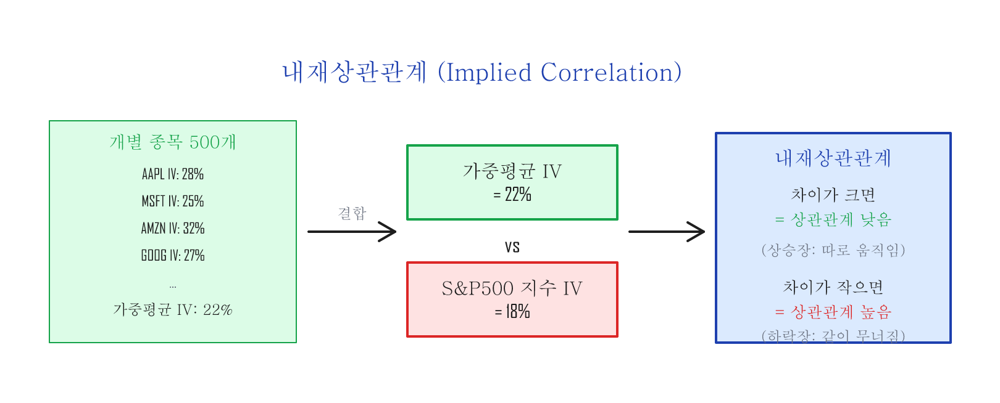
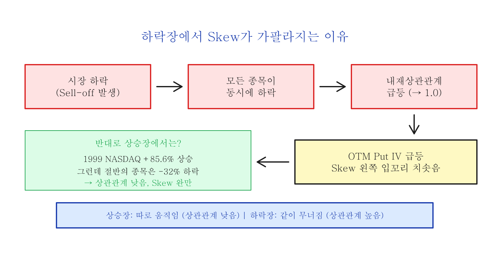

변동성 Skew — S&P500 지수 옵션의 썩소¶
옵션 가격을 결정하는 것¶
옵션 가격을 수학적으로 계산하는 블랙-숄즈(Black-Scholes) 공식에 따르면, 옵션의 가격을 결정하는 6가지 요소는 다음과 같습니다:
- 주가 (Spot Price)
- 행사가 (Strike Price)
- 만기일까지 남은 시간
- 내재변동성 (Implied Volatility)
- 배당률 (Dividend Yield)
- 무위험이자율 (Risk-Free Rate)
옵션 포지션을 새로 오픈하면, (2) 행사가와 (3) 만기일이 고정됩니다. (5) 배당률과 (6) 무위험이자율은 거의 변경되지 않기 때문에, 옵션의 가격은 실질적으로 (1) 주가와 (4) 내재변동성으로 결정된다고 생각할 수 있습니다.
(정확히는 시간이 지나면서 (3) 만기일까지 남은 시간이 줄어들기 때문에 이 역시 옵션 가격에 영향을 미칩니다.)
PNL(수익/손실) 곡선의 함정¶
새로운 옵션 포지션을 오픈할 때 우리는 수익/손실(PNL: Profit and Loss) 곡선을 분석하고 결정합니다.

대부분의 옵션 트레이더들은 처음에 교과서적으로 위와 같은 PNL을 분석하고 자신만만하게 실전에 돌입하지만 생각지도 못한 결과에 크게 좌절하게 됩니다. 여러 가지 이유가 있겠지만 그 중 가장 큰 이유는 위와 같은 PNL들이 모두 내재변동성이 상수라고 고정하고 그려졌기 때문입니다.
옵션의 가격은 (1) 주가와 (4) 내재변동성에 의해서 결정되는데, 위의 PNL들은 내재변동성을 상수로 고정한 것입니다. 사람의 두뇌는 두 개의 변수가 동시에 변하는 그래프를 쉽게 이해하기 힘들기 때문에, 먼저 IV를 고정하고 PNL을 이해한 후 IV가 변하는 경우를 따로 따지는 것입니다. (IV가 오르면 옵션 가격이 비싸지고, 내리면 싸집니다 — 이 변동이 실전 PNL을 크게 바꿉니다.)
변동성 미소(Smile) vs 변동성 썩소(Smirk)¶
일반적으로 개별 종목 옵션의 내재변동성을 행사가별로 그래프로 나타내면 "smile" 모양을 형성합니다. 이를 변동성 미소(Volatility Smile)라고 부릅니다.
그런데 지수 옵션의 경우는 한쪽 꼬리가 위로 들려진 "썩소" 모양을 형성합니다. 이를 변동성 썩소(Volatility Smirk) 또는 변동성 왜곡(Volatility Skew)이라고 합니다.

두 가지 핵심 질문:
(A) S&P500 지수는 500개의 개별 종목으로 구성되어 있고 개별 종목들은 "변동성 미소" 현상을 가지는데, 500개 종목의 합인 지수 옵션은 어떻게 "변동성 미소"가 아닌 "변동성 썩소(왜곡)" 현상이 생기는 걸까?
(B) 하락장에서 투매(Sell-off)가 발생할 때 왜 "변동성 썩소"의 왼쪽 입꼬리가 더 가파르게 올라가는 걸까?
조건부 상관관계 (Conditional Correlation)¶
S&P500의 500개 개별 종목들은 각각 현재가보다 낮은 행사가의 put 옵션(25 델타 put — 행사가가 현재가 대비 상당히 낮은 옵션) 내재변동성이 다릅니다. 개별 종목 각각의 25 델타 put 옵션 IV를 해당 종목의 지수 내 비중(가중치)으로 평균한 값과 S&P500 지수의 25 델타 put 옵션 IV를 비교하면, 개별 종목 IV와 지수 IV 간의 상관관계를 비교할 수 있습니다. 이 관계를 내재상관관계(Implied Correlation)라고 합니다.
지수 옵션의 "변동성 왜곡"은 시장이 하락할수록 옵션 시장이 더 큰 상관관계(Correlation)를 가격에 반영하기 때문에 생깁니다. 이러한 상관관계의 영향은: - 외가격(OTM: Out of The Money — 현재가에서 먼 행사가) put 옵션의 IV를 증폭시키고 - 외가격(OTM) call 옵션의 IV를 감소시킵니다
CBOE는 S&P500을 대표하는 50개 종목의 평균 내재상관관계를 추종하는 지수를 만들었습니다:

하락장에서 상관관계가 치솟는 이유¶

상승장에서 내재상관관계가 하락하는 것은 새로운 것이 하나도 없습니다. 1999년 한 해 동안 NASDAQ이 +85.6% 상승할 때, NASDAQ에 속한 거의 절반의 주식들은 오히려 하락하여 평균 -32%를 기록했습니다. 지수 상승은 소수의 대형 기술주들이 이끈 것이었습니다.
상승장에서는 모두 다 같이 상승하지 않지만, 하락장에서는 다 같이 손잡고 하락한다.
이러한 이유로 S&P500 지수 옵션의 외가격(OTM) put 옵션의 IV가 더 많이 상승하는 "변동성 썩소(왜곡)" 현상이 발생합니다.
하락의 강도가 세면 셀수록 S&P500의 내재상관관계는 더 높아지며, 변동성 Skew의 왼쪽 입꼬리는 더 가파르게 올라갑니다. 이를 "Skew가 가팔라졌다(steepened)"라고 표현합니다.
한 줄 요약:
테일 이벤트로 시장이 폭락할 때는 네 종목 내 종목 할 것 없이 다 같이 한꺼번에 무너지고 (내재상관관계의 동기화), 내재변동성이 크게 증가하면서 보험료인 put 옵션의 가격은 부르는 게 값이 된다.
이 현상은 다음 글에서 소개할 저비용 고효율 헷지 포지션을 합성하는 데 대단히 중요한 역할을 하게 됩니다.
실전에서 Skew가 의미하는 것¶
왜 OTM Put이 비싼가?¶
홍수 보험이 평지보다 강변 집에서 비싼 것처럼, 지수 하락 보험(OTM put)은 항상 "이미 비싼" 상태입니다. 기관들이 포트폴리오 보호를 위해 끊임없이 지수 put을 사기 때문입니다.
| OTM Put 매수 시 알아야 할 것 | 설명 |
|---|---|
| Skew 프리미엄 | OTM put은 등가격(ATM: At The Money — 현재가 근처 행사가) 대비 IV가 높음 → 이론가보다 비싸게 거래 |
| Skew 가팔라질 때 | 폭락 시 OTM put IV가 더 급등 → 기보유자에겐 이익, 신규 매수자에겐 비용 |
| Skew 되돌림 | 시장 안정 시 OTM put IV가 빠르게 하락 → 뒤늦게 산 put의 가치 급감 |
Skew를 나타내는 지표: CBOE SKEW Index¶
CBOE에서는 S&P500 옵션의 극단적 하락 위험(테일 리스크) 기대치를 수치화한 SKEW Index를 발표합니다.
| SKEW 값 | 의미 |
|---|---|
| ~100 | 정규분포에 가까움, 테일 리스크 낮음 |
| ~120 | 보통 수준의 테일 리스크 |
| ~140+ | 시장이 극단적 하락 가능성을 높게 평가 |
SKEW Index는 Yahoo Finance에서
^SKEW로 확인할 수 있습니다.
정리¶
| 개념 | 핵심 |
|---|---|
| Volatility Smile | 개별 종목: 양쪽 대칭 |
| Volatility Smirk (Skew) | 지수 옵션: 왼쪽(OTM put) 치솟음 |
| 원인 | 하락 시 상관관계 급등 → OTM put IV 증폭 |
| 실전 의미 | OTM put은 항상 비싸고, 폭락 시 더 비싸짐 |
| 활용 | 다음 글(Hedging the Wings)의 1:2 Put Ratio 전략 기반 |